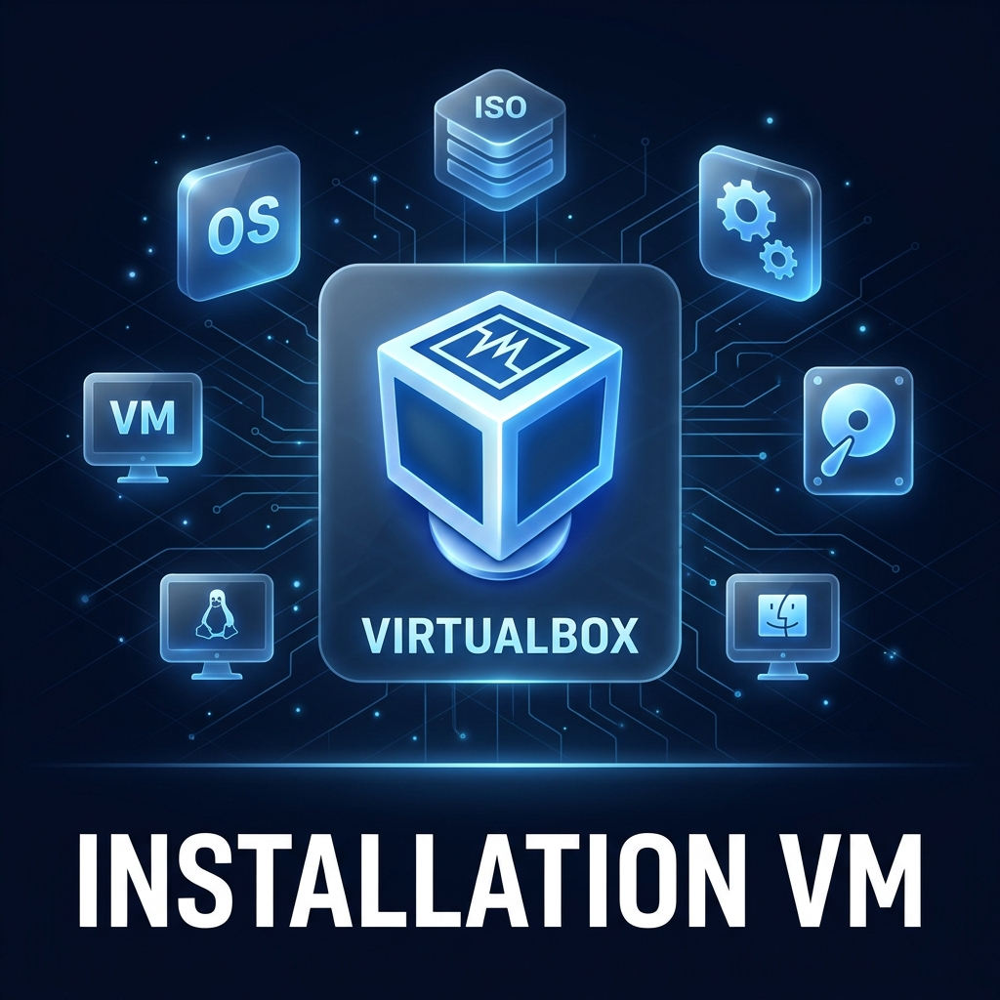
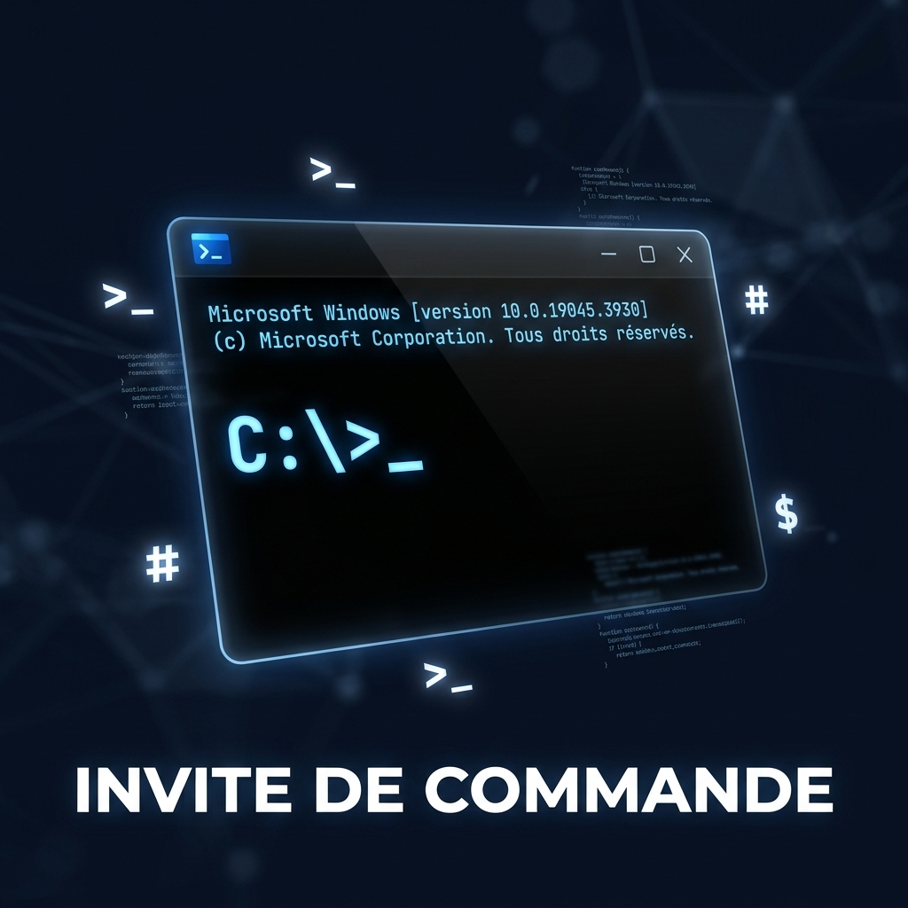

TP 1 · Virtualisation
Installation d'une VM
Création et configuration d'une machine virtuelle sous VirtualBox.
Cliquez sur la vignette pour prévisualiser — 29 travaux réalisés en formation BTS SIO SISR.

Création et configuration d'une machine virtuelle sous VirtualBox.

Prise en main et maîtrise de l'invite de commandes Windows (CMD).
Introduction à PowerShell – syntaxe, cmdlets et premiers scripts d'administration.
Choix, justification et configuration d'un PC sur-mesure selon un cahier des charges.
Approfondissement du CMD Windows et création de scripts batch automatisés.
Introduction aux bases de données relationnelles – modélisation et requêtes SQL.
Les commandes CMD incontournables pour le technicien support N1/N2.
Diagnostic et résolution de problèmes de connectivité réseau courants.
Référence pratique des commandes et cmdlets PowerShell pour l'administration.
Prise en main d'un système Linux – navigation, droits et premiers outils.
Installation des additions invitées pour améliorer l'expérience en VM.
Installation et configuration de la distribution Xubuntu (Ubuntu léger).
Création, modification et gestion des comptes utilisateurs sous Linux.
Installation et configuration d'un environnement dual-boot ou Linux Mint.
Configuration d'équipements Cisco (routeurs, switches) sur Packet Tracer.
Configuration et administration d'un switch réseau (VLANs, STP, etc.).
Référence des commandes système et réseau essentielles pour l'administration.
Conception et documentation d'une infrastructure réseau complète.
Gestion du service d'impression sous Linux avec CUPS.
TP de révision consolidant les connaissances des modules précédents.
Maîtrise des commandes de base du terminal Linux (ls, cd, chmod, grep…).
Déploiement et administration d'un hyperviseur Proxmox VE.
Gestion avancée des utilisateurs, groupes et permissions sous Linux.
Configuration et gestion des ACL pour contrôler les droits d'accès.
Déploiement d'une VM Windows 11 sur un hyperviseur Proxmox VE.
Utilisation de Nmap pour scanner et auditer une infrastructure réseau.
Création et configuration d'une VM Debian sur l'hyperviseur Proxmox VE.
Installation et configuration du pare-feu pfSense pour sécuriser un réseau.
Déploiement Active Directory, DNS et DHCP sur Windows Server 2022.